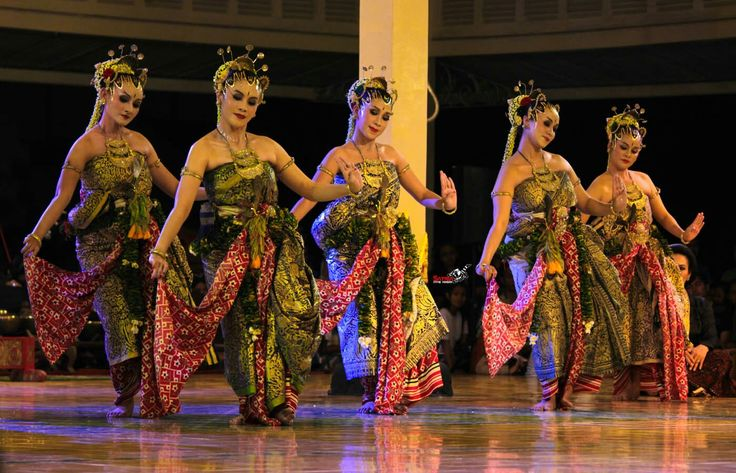
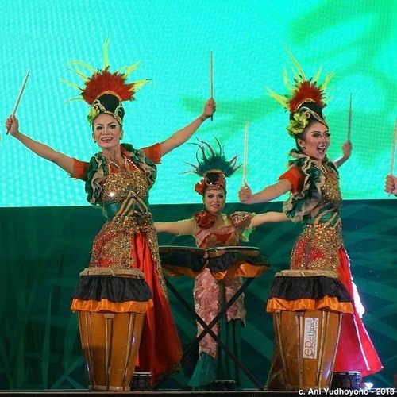
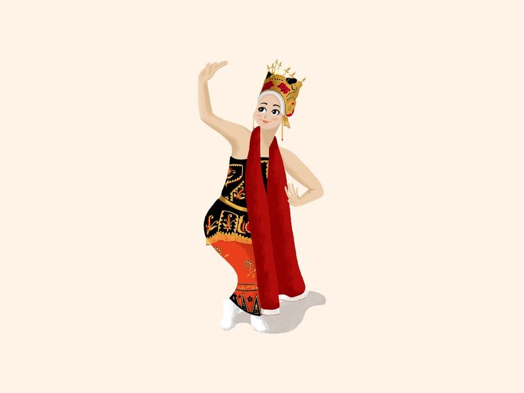
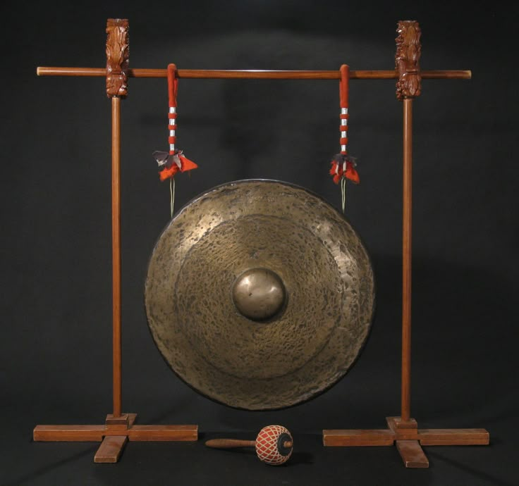
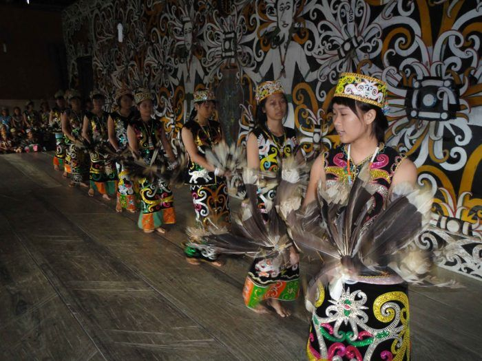
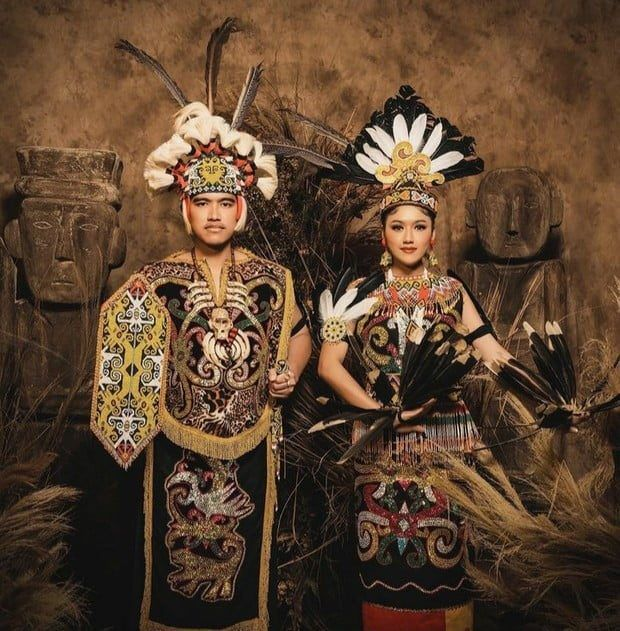
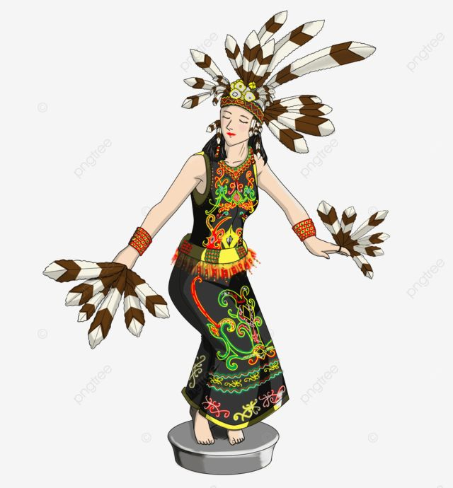
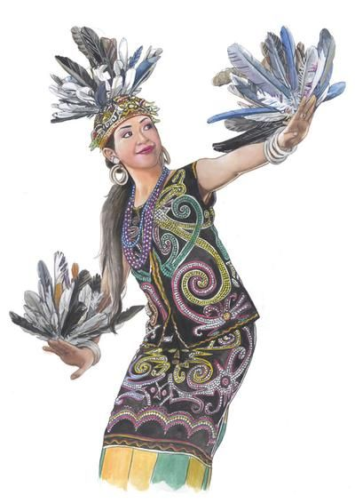

Indonesia memiliki beragam tarian tradisional yang mencerminkan identitas, nilai budaya,
serta sejarah masyarakat di setiap daerah. Berikut tiga tari nusantara yang diangkat
sebagai representasi kekayaan budaya Indonesia.
1. Tari Pendet – Bali
1️⃣ Asal Daerah & Sejarah Singkat
Tari Pendet berasal dari Provinsi Bali dan mulai dikenal secara luas pada pertengahan abad ke-20.
Pada awal kemunculannya, tarian ini merupakan bagian dari ritual keagamaan masyarakat Hindu Bali yang
ditampilkan di pura-pura sebagai bentuk persembahan kepada para dewa. Seiring perkembangan zaman,
fungsi Tari Pendet berkembang menjadi tarian penyambutan yang ditampilkan untuk menyambut tamu kehormatan.
Gambar: Tari Pendet sebagai tarian penyambutan khas Bali
2️⃣ Makna & Filosofi Tari
Tari Pendet mengandung makna filosofis yang erat dengan nilai spiritual dan sosial masyarakat Bali.
Tarian ini merupakan simbol rasa syukur dan ketulusan hati manusia kepada Tuhan atas segala anugerah.
Gerakan yang lembut dan penuh keanggunan mencerminkan sikap hormat serta keikhlasan dalam menjalani
kehidupan yang seimbang antara aspek jasmani dan rohani.
Dari sudut pandang sosial, Tari Pendet merepresentasikan sikap keterbukaan dan keramahan masyarakat Bali.
Setiap tamu dipandang sebagai pribadi yang harus dihormati dan diterima dengan penuh kehangatan.
Taburan bunga di akhir tarian melambangkan penghormatan, penyucian, serta harapan agar kehidupan
senantiasa dipenuhi kedamaian dan keharmonisan.
Gambar: Tari Pendet sebagai filosofi rasa syukur dan penghormatan
3️⃣ Kostum & Properti Tari
Kostum Tari Pendet menggunakan pakaian adat Bali yang didominasi warna-warna cerah seperti emas, merah,
dan putih. Penari mengenakan kain kamen, selendang yang diikat di pinggang, serta hiasan kepala berupa
bunga atau mahkota khas Bali. Properti utama adalah bokor berisi bunga yang ditaburkan di akhir tarian
sebagai simbol persembahan dan doa.
4️⃣ Gerakan Khas Tari
Gerakan Tari Pendet dikenal dengan ciri khas lemah gemulai namun tetap tegas dan dinamis. Fokus utama
terletak pada koordinasi tangan, tubuh, dan mata. Ciri paling menonjol adalah gerakan mata
yang disebut seledet — gerakan mata yang cepat dan tajam mengikuti irama musik.
Tarian ini umumnya dibawakan secara berkelompok oleh penari perempuan dengan gerakan yang serasi.
5️⃣ Musik Pengiring
Tari Pendet diiringi oleh musik gamelan Bali dengan irama dinamis dan ritmis. Alat musik tradisional
seperti gong, kendang, ceng-ceng, dan gangsa digunakan untuk menciptakan suasana sakral sekaligus meriah.
Perpaduan antara gerakan penari dan iringan gamelan menghasilkan pertunjukan yang hidup dan penuh makna.
6️⃣ Peran Tari di Zaman Sekarang
Di era modern, Tari Pendet memiliki peran penting sebagai bagian dari pelestarian budaya Indonesia.
Tarian ini sering ditampilkan dalam berbagai acara budaya, festival seni, penyambutan tamu resmi, serta
kegiatan pariwisata. Tari Pendet juga diajarkan di sanggar seni dan sekolah sebagai upaya mengenalkan
budaya Bali kepada generasi muda.
2. Tari Jaipong – Jawa Barat
1️⃣ Asal Daerah & Sejarah Singkat

Tari Jaipong berasal dari Provinsi Jawa Barat dan mulai dikenal luas pada tahun 1970-an.
Tarian ini berkembang dari perpaduan seni tradisional ketuk tilu, pencak silat, dan wayang golek.
Awalnya, Tari Jaipong berfungsi sebagai hiburan rakyat dan pertunjukan seni budaya Sunda.
2️⃣ Makna & Filosofi Tari
Tari Jaipong melambangkan keceriaan, keberanian, dan kepercayaan diri. Gerakannya mencerminkan
karakter perempuan Sunda yang enerjik, ramah, dan ekspresif. Tarian ini juga merepresentasikan
kebebasan berekspresi dalam seni dan kekuatan budaya lokal yang dinamis.
3️⃣ Kostum & Properti Tari

Kostum Tari Jaipong terdiri dari kebaya, sinjang, dan selendang. Warna-warna cerah pada kostum
melambangkan semangat dan keceriaan. Selendang berfungsi sebagai properti utama yang memperindah
dan memperkuat ekspresi gerakan tari.
4️⃣ Gerakan Khas Tari

Gerakan Tari Jaipong bersifat dinamis dan tegas dengan perpaduan gerakan halus. Tarian ini
dapat dibawakan secara tunggal maupun berkelompok. Ciri khasnya adalah hentakan kaki, goyangan
pinggul, dan ekspresi wajah yang kuat mencerminkan semangat budaya Sunda.
5️⃣ Musik Pengiring

Musik pengiring Tari Jaipong berasal dari gamelan Sunda seperti kendang, gong, dan kecrek.
Irama musiknya cepat dan ritmis sehingga memperkuat karakter enerjik tarian Jaipong dan
membangun suasana pertunjukan yang meriah.
6️⃣ Peran Tari di Zaman Sekarang
Tari Jaipong banyak ditampilkan dalam acara budaya, pernikahan, dan festival seni nasional.
Tarian ini juga menjadi materi pembelajaran seni budaya di sekolah-sekolah di Jawa Barat dan
terus diwariskan kepada generasi muda sebagai bagian dari identitas budaya Sunda.
3. Tari Kancet Ledo – Kalimantan Timur
1️⃣ Asal Daerah & Sejarah Singkat

Tari Kancet Ledo berasal dari Kalimantan Timur dan merupakan tarian tradisional suku Dayak Kenyah.
Tarian ini dahulu dipentaskan sebagai hiburan dan simbol keanggunan perempuan Dayak, serta
sebagai bentuk ekspresi penghormatan terhadap alam dan kehidupan.
2️⃣ Makna & Filosofi Tari

Tari Kancet Ledo melambangkan kelembutan, keindahan, dan keharmonisan antara manusia dan alam.
Gerakan yang menyerupai burung enggang mencerminkan penghormatan masyarakat Dayak terhadap alam
dan makhluk hidup di sekitarnya sebagai bagian dari keseimbangan semesta.
3️⃣ Kostum & Properti Tari

Kostum tari berupa pakaian adat Dayak dengan hiasan bulu burung enggang yang khas. Properti utama
adalah bulu burung yang melambangkan keagungan dan kekuatan alam. Warna kostum yang kaya
mencerminkan kedekatan masyarakat Dayak dengan alam dan lingkungan sekitar.
4️⃣ Gerakan Khas Tari

Gerakan Tari Kancet Ledo bersifat lembut dan mengalir. Tarian ini umumnya dibawakan secara tunggal
oleh penari perempuan. Ciri khasnya terletak pada ayunan tangan yang menyerupai kepakan sayap burung
enggang — anggun dan penuh makna.
5️⃣ Musik Pengiring
Musik pengiring menggunakan alat musik tradisional Dayak seperti sampek dan gong. Irama musik
cenderung tenang dan mendukung keanggunan gerakan tari, menciptakan suasana yang meditatif
dan penuh penghayatan budaya.
6️⃣ Peran Tari di Zaman Sekarang
Saat ini, Tari Kancet Ledo sering ditampilkan dalam festival budaya dan acara adat di Kalimantan.
Upaya pelestarian dilakukan melalui sanggar tari dan pendidikan budaya lokal agar tarian ini
terus hidup dan dikenal oleh generasi berikutnya sebagai warisan leluhur.